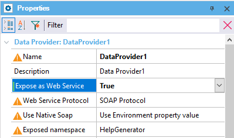

| False |
| True |
Objects: Procedure, Data Provider, Business Component
Generators: .NET, .NET Framework, Java
To facilitate the exchange of information between systems, the most common practice is the use of Web Services.
For this reason, if you have a Procedure, a Data Provider, or a Business Component that returns any information, you can enable it to be published as a Web Service.
To achieve this, set the Expose as Web Service object property to True:

Note: When you set the Expose as Web Service property to True, the Exposed namespace property is automatically enabled with the name of the KB and you can change it if you want.
This property applies only at design-time.
| Backlinks | ||
| Call protocol property | Expose a Data Provider as Web Service | Process procedure |
| REST Protocol property | SOAP Protocol property | Use Native Soap property |